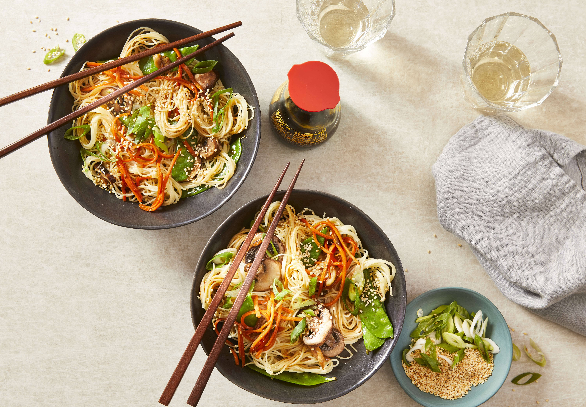

This simple noodle bowl recipe is super adaptable. Feel free to swap out
the mushrooms and snow peas for other quick-cooking veggies, such as
broccoli, cabbage, or green beans.
Ingredients needed for the recipe:
2 tablespoons vegetable oil
1 cup sliced fresh mushrooms
1 cup snow peas
3/4 cup shredded carrot
4 medium (4-1/8" long)s green onions, sliced
1 clove garlic, minced
1/4 cup reduced-sodium soy sauce
1 teaspoon white sugar
1/4 teaspoon cayenne pepper
8 ounces cooked spaghetti
1 tablespoon toasted sesame seeds
Steps:
Heat oil in a skillet over medium-high heat. Add mushrooms, snow peas,
carrot, and green onions. Cook, stirring, until crisp-tender, about 4
minutes. Add garlic; cook 1 minute more.
Stir together soy sauce, sugar, and cayenne in a small bowl; pour into
skillet. Add cooked spaghetti and toss to coat. Cook until heated
through, about 1 minute. Sprinkle with toasted sesame seeds.